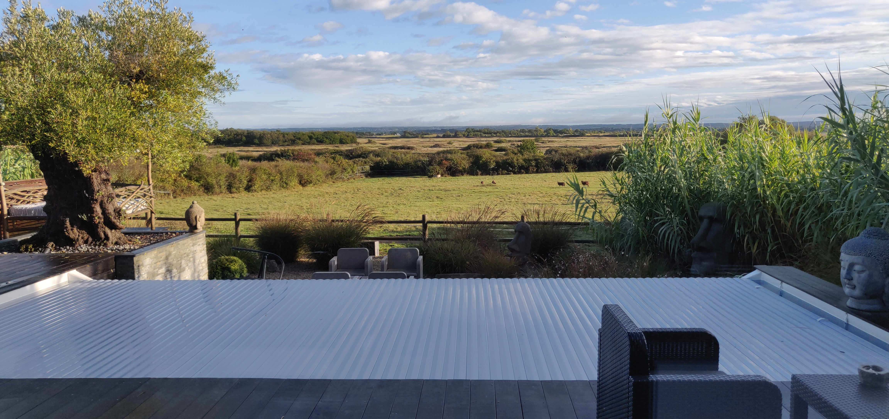
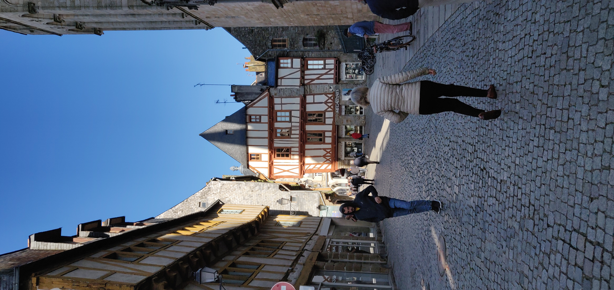
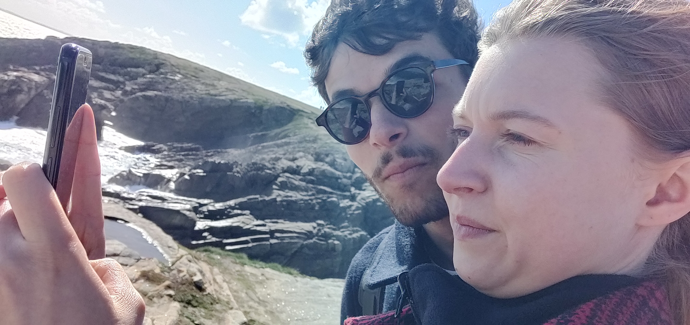
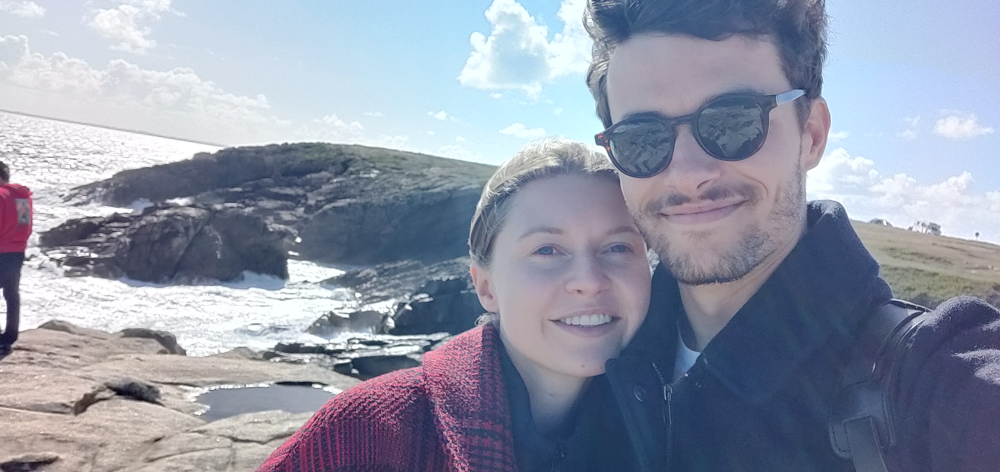
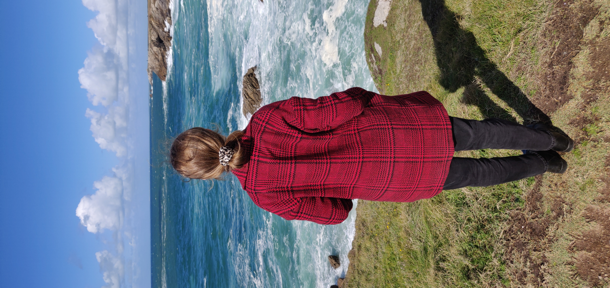

Aujourd'hui, c'est une nouvelle aventure que je veux te raconter. Celle de notre séjour en Bretagne.
Tout commence avec la UKI qui n'a plus de batterie. Mais alors qu'on pense le week end gâché, nous faisons appel aux voisins. Après un bon moment à chercher leurs batterie, nous arrivons enfin à démarrer la voiture !
Ca y est, nous voilà partis pour la Bretagne, sur la route il pleut beaucoup et c'est pas très encourageant.
Mais quand on arrive tout change !

La bàs, on passe une super nuit, avec un super bain !
Et le lendemain direction Vannes, son marché, et le Kouign-Amann (le gateau)

Pour finir en beauté, après une petite crêpe, nous filons sur la côté sauvage !


